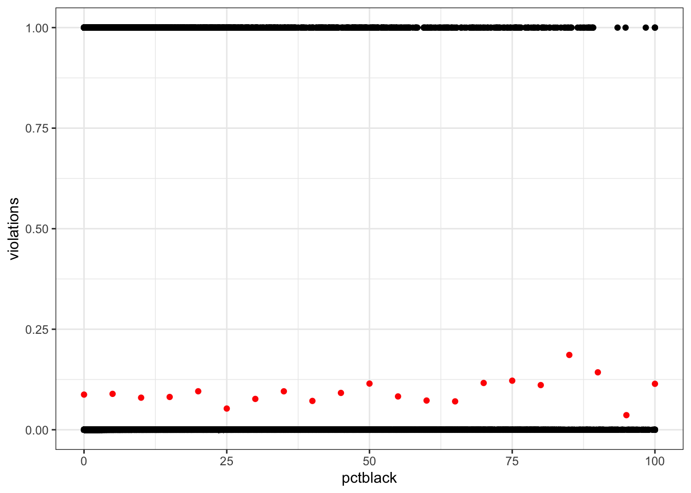
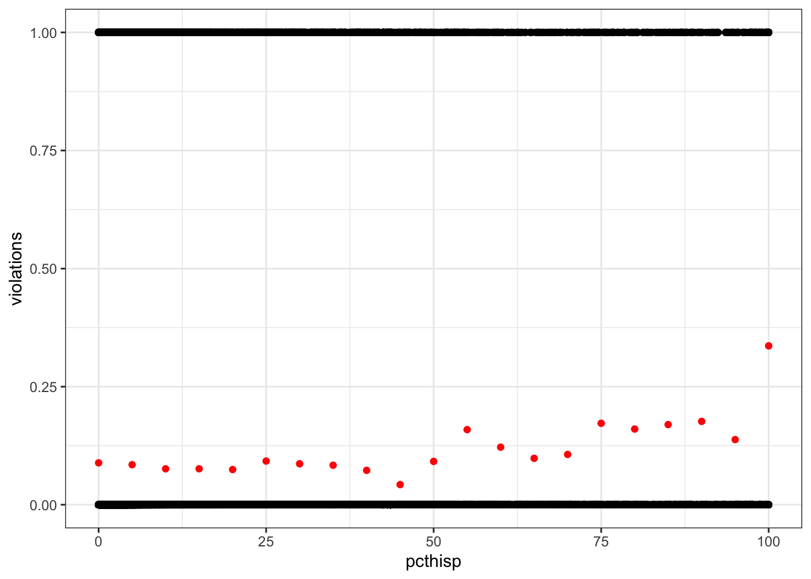
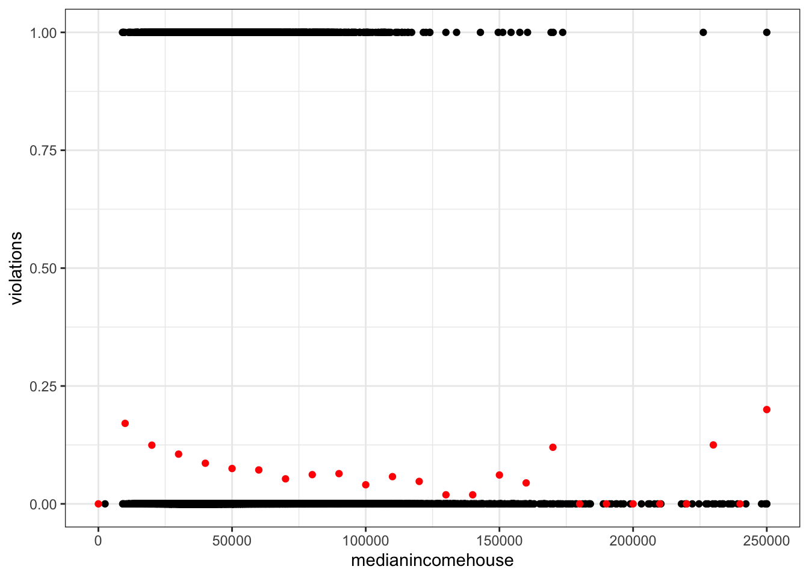
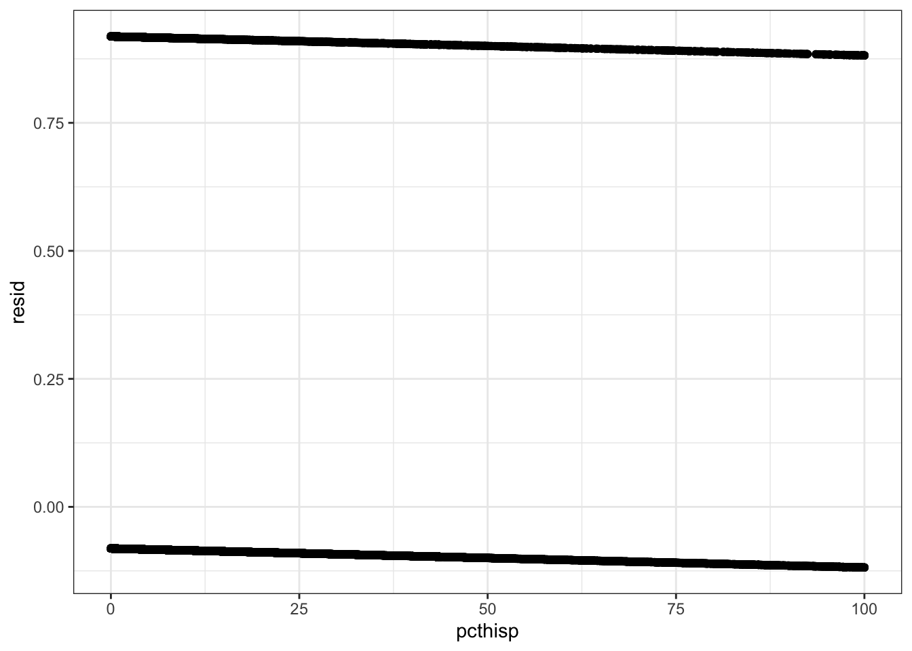
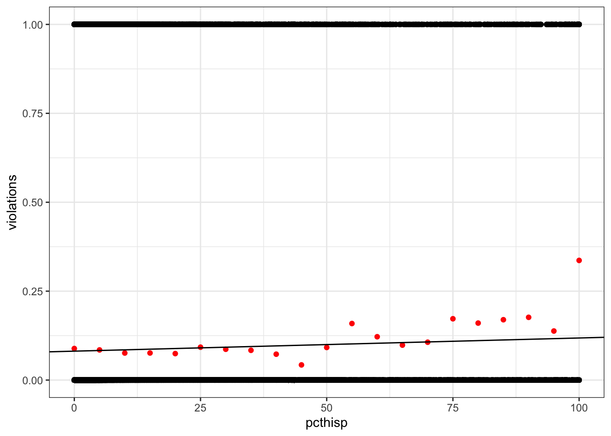
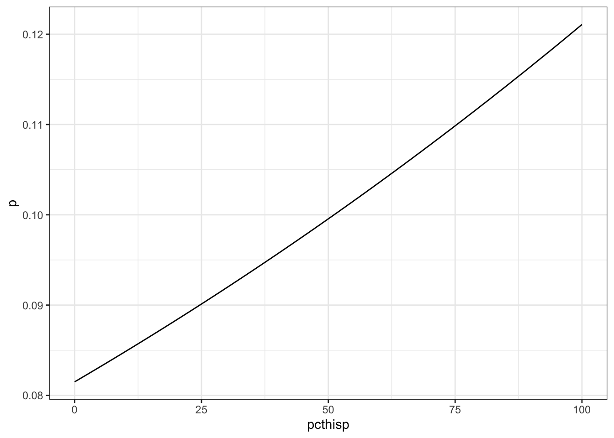
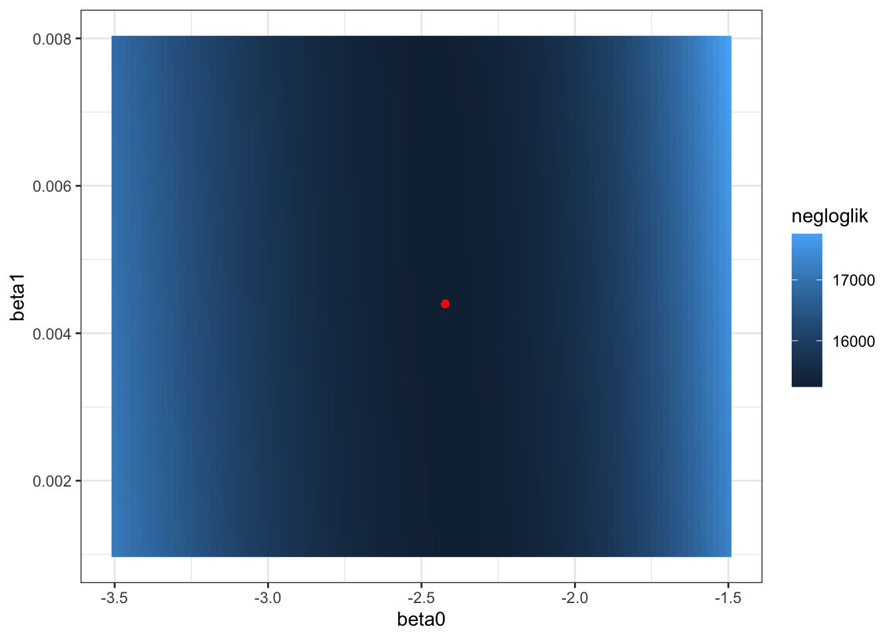
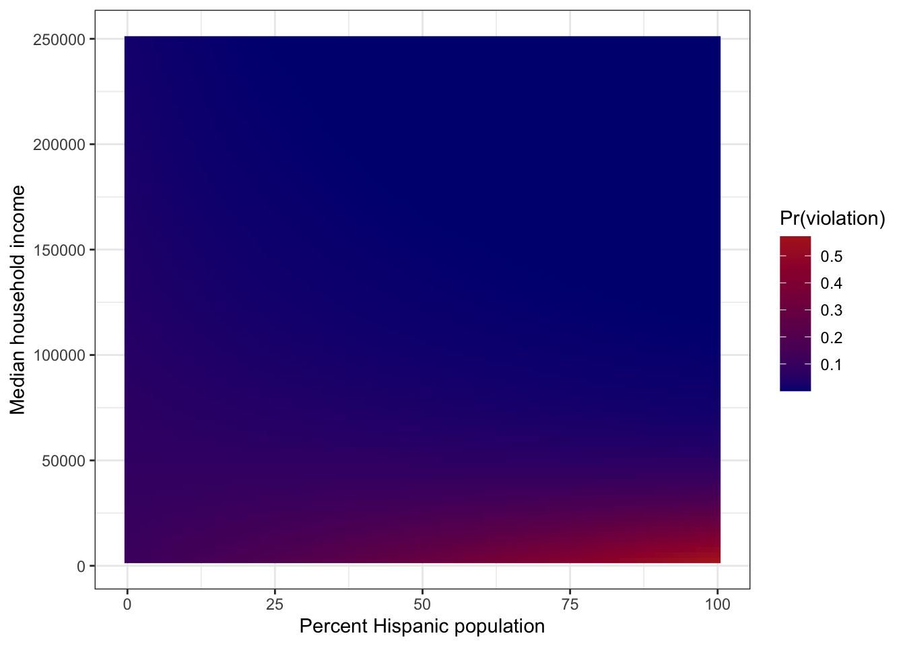

suppressMessages(library(tidyverse))
theme_set(theme_bw())
drinking_water <- read_csv("drinking_water.csv", show_col_types = FALSE)The Color of Drinking Water
Is exposure to environmental hazards influenced by class or race and ethnicity? Switzer and Teodoro (Switzer and Teodoro 2017) argued the either-or framing of that question is misguided, and actually the interaction between class and race/ethnicity is the important question for environmental justice. Today’s lab will use logistic regression and interaction terms to investigate drinking water quality in the context of socio-economic status (SES), race, and ethnicity.
Overview
- Data exploration
- Try (and fail) to use OLS
- Fit a logistic regression model using maximum likelihood
- Fit the full logistic regression model using
glm()
Data exploration
We will use the data from Switzer and Teodoro (2017) for today’s lab. Begin by downloading the CSV file available here. These data come from multiple sources.
Water utility and violations data
Source: Safe Drinking Water Information System (SDWIS)
Time period: 2010-2013 (4 years)
Sample size: 12,972 utilities
Criteria: Local government-owned utilities serving populations of 10,000 or more
Demographic data
Source: US Census Bureau’s American Community Surveys (2010-2013)
Variables included:
Percent Hispanic population
Percent Black population
Percent of population with high school education
Percent of population with bachelor’s degree
Percent of population below poverty line
Median household income
Load the data and begin exploring.
Questions
- What do you think each row represents?
The water utility and demographic data for a single district in a single year. - What columns do you think represent:
- Drinking water health violations?
health - Percent Black and Hispanic population in the utility district?
pctblackandpcthisp, respectively - Median household income in the utility district?
medianincomehouse
- Drinking water health violations?
- One column includes a count of drinking water health violations. How would you create a new column with a binary variable representing whether there were any violations?
drinking_water$violations <- ifelse(drinking_water$health > 0, 1, 0)- Create a scatter plot of violations against race (percent Black population), ethnicity (percent Hispanic population), and SES (median household income). What visualization issues do we get with a scatter plot? How could you address that?
Points are overplotted, we can’t see the overall trend. One option: bin the data and calculate the mean.
violations_by_pctblack <- drinking_water %>%
mutate(pctblack = round(pctblack / 5) * 5) %>%
group_by(pctblack) %>%
summarize(violations = mean(violations))
ggplot(drinking_water, aes(pctblack, violations)) +
geom_point() +
geom_point(data = violations_by_pctblack, color = "red")Warning: Removed 2351 rows containing missing values or values outside the scale range
(`geom_point()`).Warning: Removed 1 row containing missing values or values outside the scale range
(`geom_point()`).
violations_by_pcthisp <- drinking_water %>%
mutate(pcthisp = round(pcthisp / 5) * 5) %>%
group_by(pcthisp) %>%
summarize(violations = mean(violations))
ggplot(drinking_water, aes(pcthisp, violations)) +
geom_point() +
geom_point(data = violations_by_pcthisp, color = "red")Warning: Removed 2351 rows containing missing values or values outside the scale range
(`geom_point()`).
Removed 1 row containing missing values or values outside the scale range
(`geom_point()`).
violations_by_medianincomehouse <- drinking_water %>%
mutate(medianincomehouse = round(medianincomehouse / 1e4) * 1e4) %>%
group_by(medianincomehouse) %>%
summarize(violations = mean(violations))
ggplot(drinking_water, aes(medianincomehouse, violations)) +
geom_point() +
geom_point(data = violations_by_medianincomehouse, color = "red")Warning: Removed 2368 rows containing missing values or values outside the scale range
(`geom_point()`).
Removed 1 row containing missing values or values outside the scale range
(`geom_point()`).
Try (and fail) to use OLS
Fit the following OLS model.
\[ \text{violations} = \beta_0 + \beta_1\text{percentHispanic} \]
pcthisp_lm <- lm(violations ~ pcthisp, drinking_water)
summary(pcthisp_lm)
Call:
lm(formula = violations ~ pcthisp, data = drinking_water)
Residuals:
Min 1Q Median 3Q Max
-0.11842 -0.08571 -0.08268 -0.08167 0.91868
Coefficients:
Estimate Std. Error t value Pr(>|t|)
(Intercept) 8.132e-02 1.477e-03 55.063 < 2e-16 ***
pcthisp 3.711e-04 7.073e-05 5.246 1.56e-07 ***
---
Signif. codes: 0 '***' 0.001 '**' 0.01 '*' 0.05 '.' 0.1 ' ' 1
Residual standard error: 0.2798 on 52178 degrees of freedom
(2351 observations deleted due to missingness)
Multiple R-squared: 0.0005272, Adjusted R-squared: 0.0005081
F-statistic: 27.52 on 1 and 52178 DF, p-value: 1.558e-07Questions
- Plot the residuals. What pattern do you notice?
All the residuals fall along two parallel lines - not normal!
drinking_water %>%
select(violations, pcthisp) %>%
drop_na() %>%
mutate(resid = resid(pcthisp_lm)) %>%
ggplot(aes(pcthisp, resid)) +
geom_point()
- Plot the raw data and the predicted values for
violations. Are there any obvious problems?
The predicted values fall between 0 and 1, so they could conceivably be interpreted as probabilities. But the raw data are far from the line.
ggplot(drinking_water, aes(pcthisp, violations)) +
geom_point() +
geom_point(data = violations_by_pcthisp, color = "red") +
geom_abline(intercept = coef(pcthisp_lm)[1],
slope = coef(pcthisp_lm)[2])Warning: Removed 2351 rows containing missing values or values outside the scale range
(`geom_point()`).Warning: Removed 1 row containing missing values or values outside the scale range
(`geom_point()`).
Fit a logistic regression model using maximum likelihood
Recall that logistic regression uses maximum likelihood, not OLS, to estimate coefficients. Usually we will use functions from R packages to fit these models, but I want you to do it yourself once.
Negative log likelihood
Estimting coefficients is an optimization problem: what combination yields the maximum likelihood? There are two things we can do to make our problem more tractable for optimization.
- Recall that the likelihood function involves a product. Multiplication is computationally costly (compared to addition) and multiplying small numbers is very error prone. We can avoid this problem by working with logarithms. The log of a product is the sum of the logs: \(log(a \times b) = log(a) + log(b)\). Logarithms are monotonically increasing, which means if \(a > b\) then \(log(a) > log(b)\). This useful property means we can maximize the sum of the log likelihoods (which is quick and robust to errors) instead of the product of likelihoods (which is slow and error prone).
- Optimization algorithms typically find the minimum value. They’re intended to look for valleys, not peaks. So instead of maximizing the log likelihood, we can minimize the negative log likelihood.
That seems confusing! Let’s write the code and so we can see what’s happening. Do the following:
- Write a likelihood function for the violations and percent Hispanic model. This should calculate the negative log likelihood of a set of coefficients, conditional on the data.
- Call an optimization function to find the maximum likelihood parameters.
It will help to keep the model formulation handy:
\[ \begin{align} \text{violations} &\sim Bernoulli(p) \\ logit(p) &= \beta_0 + \beta_1 \text{percentHispanic} \end{align} \]
# Inverse logit utility function
inv_logit <- function(x) exp(x) / (1 + exp(x))
# Likelihood of the coefficients, given the data
likelihood_fun <- function(coefficients, data) {
# Calculate logit(p) based on coefficients and predictor
logit_p <- coefficients["beta0"] + coefficients["beta1"] * data$pcthisp
# Invert the logit to get p
p <- inv_logit(logit_p)
# Use the PMF of the Bernoulli to get our log likelihoods
loglik <- dbinom(data$violations, size = 1, prob = p, log = TRUE)
# Sum the negative log likelihood
sum(-loglik)
}
# Use an optimization function to get the maximum likelihood coefficients
drinking_water_complete <- drop_na(drinking_water, pcthisp, violations)
coef_optim <- optim(c(beta0 = 0, beta1 = 0),
likelihood_fun,
data = drinking_water_complete)Questions
- What were your maximum likelihood estimates for \(\hat\beta_0\) and \(\hat\beta_1\)?
coef_optim$par beta0 beta1
-2.422124762 0.004398142 - What’s the predicted probability of drinking water violations for communities with 0%, 50%, and 100% Hispanic population?
Plot the predicted probability across the whole range 0-100% Hispanic.
beta0_hat <- coef_optim$par["beta0"]
beta1_hat <- coef_optim$par["beta1"]
pcthisp <- seq(0, 100, by = 1)
logit_p <- beta0_hat + beta1_hat * pcthisp
p <- inv_logit(logit_p)
p[pcthisp %in% c(0, 50, 100)][1] 0.08150106 0.09955152 0.12107275tibble(pcthisp, p) %>%
ggplot(aes(pcthisp, p)) +
geom_line()
- How much does the probability of a drinking water violation change when percent Hispanic population increases from 10 to 20%, 45 to 55%, and 80 to 90%?
p[pcthisp %in% c(20, 55, 90)] - p[pcthisp %in% c(10, 45, 80)][1] 0.003478296 0.003942686 0.004450113- How would you interpret the coefficients? What do the slope and intercept mean in this context? Where is the relationship linear, and where is it non-linear?
The coefficients define a linear function in logit space. The intercept is the value of the logit(p) when percent Hispanic is 0. The slope is the change in logit(p) for a 1-percent increase in Hispanic population. p itself is non-linearly related to percent Hispanic population, because the logit function is not linear. - Create a “DEM” of the likelihood landscape for \(\beta_0\) and \(\beta_1\). Choose a range of \(\beta_0\) and \(\beta_1\) values around your best estimates, calculate the likelihood for each combination, and create a figure with \(\beta_0\) on the x-axis, \(\beta_1\) on the y-axis, and the likelihood as the fill. Add a point for \((\hat\beta_0, \hat\beta_1)\).
Bonus problem: add contours!
likelihood_dem <- expand_grid(
beta0 = seq(-3.5, -1.5, length.out = 1e2),
beta1 = seq(0.001, 0.008, length.out = 1e2)
) %>%
mutate(coefficients = mapply(function(b0, b1) c(beta0 = b0, beta1 = b1),
beta0, beta1,
SIMPLIFY = FALSE),
negloglik = sapply(coefficients,
likelihood_fun,
data = drinking_water_complete),
likelihood = exp(-negloglik))
ggplot(likelihood_dem, aes(beta0, beta1, fill = negloglik)) +
geom_raster() +
geom_point(x = beta0_hat, y = beta1_hat, color = "red")
Fit the full logistic regression model using glm()
Normally we won’t need to write our own likelihood functions and use optimization to find our maximum likelihood coefficients. The glm() function in the built-in stats package can fit all kinds of generalized linear models, which includes logistic regression.
Here’s how to fit the same model from the previous section. Notice the formula and data arguments look very similar to what we’d use for lm(). But now we have to specify the response variable’s “family” (i.e., the type of random variable) and the link function we want to use (logit, in our case).
pcthisp_glm <- glm(violations ~ pcthisp,
family = binomial(link = "logit"),
data = drinking_water)
summary(pcthisp_glm)
Call:
glm(formula = violations ~ pcthisp, family = binomial(link = "logit"),
data = drinking_water)
Coefficients:
Estimate Std. Error z value Pr(>|z|)
(Intercept) -2.4216934 0.0189831 -127.571 < 2e-16 ***
pcthisp 0.0043896 0.0008383 5.236 1.64e-07 ***
---
Signif. codes: 0 '***' 0.001 '**' 0.01 '*' 0.05 '.' 0.1 ' ' 1
(Dispersion parameter for binomial family taken to be 1)
Null deviance: 30509 on 52179 degrees of freedom
Residual deviance: 30483 on 52178 degrees of freedom
(2351 observations deleted due to missingness)
AIC: 30487
Number of Fisher Scoring iterations: 5Questions
- How would you fit a model that includes an interaction term between ethnicity and SES?
interaction_glm <- glm(violations ~ pcthisp * medianincomehouse,
family = binomial(link = "logit"),
data = drinking_water)
summary(interaction_glm)
Call:
glm(formula = violations ~ pcthisp * medianincomehouse, family = binomial(link = "logit"),
data = drinking_water)
Coefficients:
Estimate Std. Error z value Pr(>|z|)
(Intercept) -2.017e+00 5.174e-02 -38.984 < 2e-16 ***
pcthisp 2.463e-02 2.696e-03 9.136 < 2e-16 ***
medianincomehouse -8.253e-06 1.169e-06 -7.063 1.63e-12 ***
pcthisp:medianincomehouse -5.497e-07 7.098e-08 -7.745 9.55e-15 ***
---
Signif. codes: 0 '***' 0.001 '**' 0.01 '*' 0.05 '.' 0.1 ' ' 1
(Dispersion parameter for binomial family taken to be 1)
Null deviance: 30506 on 52162 degrees of freedom
Residual deviance: 30222 on 52159 degrees of freedom
(2368 observations deleted due to missingness)
AIC: 30230
Number of Fisher Scoring iterations: 5- Create a figure similar to Fig. 1 in Switzer and Teodoro (2017). Put percent Hispanic population on the x-axis, median household income on the y-axis, and make the fill the probability of a water quality violation.
predictions <- expand_grid(
pcthisp = seq(0, 100, length.out = 100),
medianincomehouse = seq(2500, 250000, length.out = 100)
) %>%
mutate(violations = predict(interaction_glm,
newdata = .,
type = "response"))
ggplot(predictions, aes(pcthisp,
medianincomehouse,
fill = violations)) +
geom_raster() +
scale_fill_gradient(low = "navy", high = "firebrick") +
labs(x = "Percent Hispanic population",
y = "Median household income",
fill = "Pr(violation)")
- Interpret the predicted surface. How does SES influence the relationship between ethnicity and exposure to environmental hazards? What is the “slope” of the probability of a violation w.r.t. percent Hispanic population at low, medium, and high median household income levels?
At the low end of the SES axis, Pr(violation) increases steeply with percent Hispanic population, but the relationship is flatter at higher income levels. At a low median household income level ($30k), the “slope” is 0.008. At moderate ($45k) and high ($60k) median household income levels, the “slope” is ~0 and -0.008, respectively. Note: there are very few data points in the upper-right corner of the figure, so the negative slope observed for high median household income level may be an extrapolation issue.
References
Switzer, David, and Manuel P. Teodoro. 2017. “The Color of Drinking Water: Class, Race, Ethnicity, and Safe Drinking Water Act Compliance.” Journal AWWA 109 (9): 40–45. https://doi.org/10.5942/jawwa.2017.109.0128.